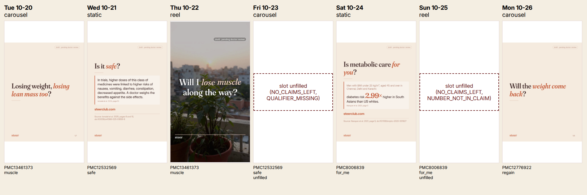

A week of content: steer batch
Checked by code against the paper and by an independent model. Not clinical approval: every post is pending review by a Steer doctor.
Planned by steer batch from 4 papers; order from the learning loop (benchmark of 11 public posts + our own rejections); every post pending doctor review.
The week starts Tue 20 Oct 2026. Posts go out at 19:00 IST (week.ics); this is a draft plan, not a publishing schedule.
Method: cells ordered by the S6 score opp(doubt); equal scores: a cell with a curated brief first, then paper id; one slot per day, no theme on consecutive days, each doubt at most 2 times; formats rotate carousel, static, reel.
Download the calendar (week.ics)

Tue 2026-10-20
carousel · PMC13461373 · muscle · post-3aa016d5 · curated brief code/briefs/PMC13461373.json
Caption (English) · Caption (Hinglish)
best-scoring cell still free: PMC13461373 lean_mass_during_weight_loss x will_i_lose_muscle; opp(muscle) = 0.2727 (benchmark posts 3/11, our posts 0/52, flags+rejections 0); theme differs from the day before (first day); doubt muscle used 1 of 2; claims ['c000-01', 'c000-00', 'c007-01']; curated brief code/briefs/PMC13461373.json
Wed 2026-10-21
static · PMC12532569 · safe · post-b9efc2f8 · automatic brief
Caption (English)
best-scoring cell still free: PMC12532569 glp1_how_it_works x is_it_safe; opp(safe) = 0.0909 (benchmark posts 1/11, our posts 0/52, flags+rejections 0); theme differs from the day before (lean_mass_during_weight_loss); doubt safe used 1 of 2; claims ['c000-01', 'c003-02', 'c007-00', 'c008-00']; automatic brief
Thu 2026-10-22
reel · PMC13461373 · muscle · post-72926563 · automatic brief (next claim set; the curated set is already published this week)
Watch the reel (MP4) · Caption (English) · Caption (Hinglish)
best-scoring cell still free: PMC13461373 lean_mass_during_weight_loss x will_i_lose_muscle; opp(muscle) = 0.2727 (benchmark posts 3/11, our posts 0/52, flags+rejections 0); theme differs from the day before (glp1_how_it_works); doubt muscle used 2 of 2; claims ['c000-02', 'c000-03', 'c001-00', 'c001-01']; automatic brief (next claim set; the curated set is already published this week)
Fri 2026-10-23
carousel · PMC12532569 · safe
unfilled NO_CLAIMS_LEFT, QUALIFIER_MISSING
best-scoring cell still free: PMC12532569 glp1_how_it_works x is_it_safe; opp(safe) = 0.0909 (benchmark posts 1/11, our posts 0/52, flags+rejections 0); theme differs from the day before (lean_mass_during_weight_loss); doubt safe used 2 of 2; claims ['c009-04', 'c005-03', 'c008-07']; automatic brief
Sat 2026-10-24
static · PMC8006839 · for_me · post-0e31b93a · curated brief code/briefs/PMC8006839.json
Caption (English)
best-scoring cell still free: PMC8006839 insulin_resistance x is_it_for_me; opp(for_me) = 0.0115 (benchmark posts 1/11, our posts 46/52, flags+rejections 91); theme differs from the day before (glp1_how_it_works); doubt for_me used 1 of 2; claims ['c004-01', 'c004-00']; curated brief code/briefs/PMC8006839.json
Sun 2026-10-25
reel · PMC8006839 · for_me
unfilled NO_CLAIMS_LEFT, NUMBER_NOT_IN_CLAIM
best-scoring cell still free: PMC8006839 indian_food_and_life x is_it_for_me; opp(for_me) = 0.0115 (benchmark posts 1/11, our posts 46/52, flags+rejections 91); theme differs from the day before (insulin_resistance); doubt for_me used 2 of 2; claims ['c007-02', 'c008-00', 'c001-03']; automatic brief
Mon 2026-10-26
carousel · PMC12776922 · regain · post-92f0b86a · curated brief code/briefs/PMC12776922.json
Caption (English) · Caption (Hinglish)
best-scoring cell still free: PMC12776922 weight_regain x will_weight_come_back; opp(regain) = 0.0000 (benchmark posts 0/11, our posts 6/52, flags+rejections 3); theme differs from the day before (indian_food_and_life); doubt regain used 1 of 2; claims ['c000-01', 'c004-01', 'c005-04']; curated brief code/briefs/PMC12776922.json
Back